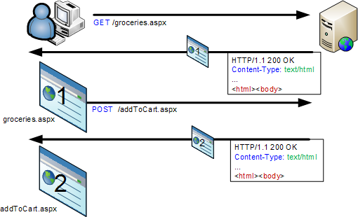
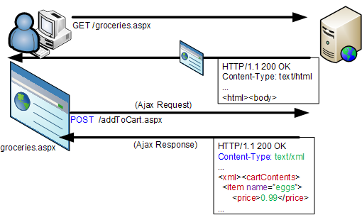
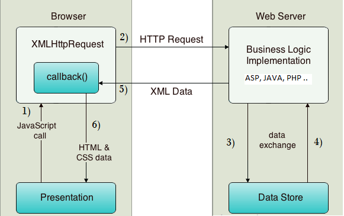
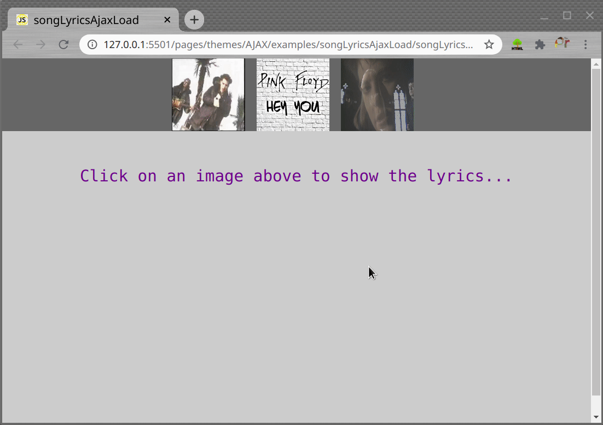

Keyboard shortcuts:
N/СпейсNext Slide
PPrevious Slide
OSlides Overview
ctrl+left clickZoom Element
If you want print version => add '
?print-pdf' at the end of slides URL (remove '#' fragment) and then print.
Like: https://wwwcourses.github.io/...CourseIntro.html?print-pdf
AJAX: consuming Remote Data with JavaScript
Created for
Created by
What is AJAX?
What is AJAX?
AJAX
Asynchronous
JavaScript
And
XML
In reality, these days, the use of JSON prevails over XML, but for backward compatibility we do not say AJAJ
With AJAX, Web applications can send and retrieve data from a Web server asynchronously (in the background) without refreshing the existent page
Traditional Model of Client-Server Communication
{kind=link}
The traditional model of communication works synchronously.
Traditional Model is Synchronous

AJAX Model of Client-Server Communication
{kind=link}
The AJAX model of communication can work asynchronously.
AJAX Model is Asynchronous

With AJAX we can:
- Update a web page without reloading the page
- Request data from a server - after the page has loaded
- Receive data from a server - after the page has loaded
- Send data to a server - in the background
How AJAX communication works?
{kind=link}
- Note, that data format can be not only XML, but any (JSON, YAML, CSV, RDF,...), but the most popular these days is JSON, which will be discussed in next lectures.
So, what is AJAX and what's behind it?
- AJAX is just the name for combination of technologies:
- the use of the built-in XMLHttpRequest object to request data from a web server
- the use of JavaScript and HTML DOM (to display or use the data)
the XMLHttpRequest object
the XMLHttpRequest object
Simple example
An empty DIV in which the data will be load, after the button click.
Note, that only the DIV content will be updated!
Simple example
var nodes={
output: document.getElementsByClassName('output')[0],
getDataBtn: document.getElementsByClassName('getDataBtn')[0],
};
var dataURL = 'loremIpsum.txt';
var AJAXcall = function(){
// create a XMLHttpRequest object
var xhr = window.XMLHttpRequest ? new XMLHttpRequest() :
new ActiveXObject("Microsoft.XMLHTTP");
// initializes the request:
xhr.open("GET", dataURL, true);
// EventHandler, that will be fired each time when the xhr state changes
xhr.onreadystatechange = function() {
if (this.readyState == 4 && this.status == 200) {
// finally do something with content:
nodes.output.innerHTML = this.responseText;
};
};
// sends the request:
xhr.send();
};
nodes.getDataBtn.addEventListener('click', function(){
AJAXcall();
});
- Note, that we can not send synchronous requests even with XHR object, as it's in the process of being removed from the web platform
- Reference: whatwg.org
the Fetch API
the Fetch API
- The Fetch API provides an interface for fetching resources, similar to the XMLHttpRequest, but the new API provides a more powerful and flexible feature set.
- Fetch APIs use the concept of promises in JavaScript
- As Fetch APIs are "A modern replacement for XMLHttpRequest", do think about the browser compatibility: caniuse.com: fetch
- Reference: Fetch API at MDN
Promises - Overview
- A Promise is an object representing the eventual completion or failure of an asynchronous operation
- Essentially, a promise is a returned object to which you attach callbacks, instead of passing callbacks into a function.
- A promise can either be fulfilled with a value or rejected with a reason (error)
- A promise object has method
then()which accepts two callback functions and returns a promise object (which means that we can chain multiplethen()calls) - Once a Promise is fulfilled or rejected, the respective handler function (onFulfilled or onRejected) will be called asynchronously
p.then(onFulfilled[, onRejected]);
p.then(value => {
// fulfillment
}, reason => {
// rejection
});
fetch() method - basic syntax
const response = fetch(url [, init])
- fetch() starts the process of fetching a resource from the network, returning a promise which is fulfilled once the response is available (even if the server response is an HTTP error status)
- fetch() method takes one mandatory argument, the URL to the resource you want to fetch.
- an optional second argument - init object, can be supplied containing any custom settings that we want to apply to the request
- It returns a Promise that resolves to a Response object to that request
fetch() - example
const response = fetch('https://jsonplaceholder.typicode.com/todos/1')
console.dir(response);
// Promise
// [[Prototype]]: Promise
// catch: ƒ catch()
// constructor: ƒ Promise()
// finally: ƒ finally()
// then: ƒ then()
// Symbol(Symbol.toStringTag): "Promise"
// [[Prototype]]: Object
// [[PromiseState]]: "fulfilled"
// [[PromiseResult]]: Response
making GET request - basic steps
// with function declarations
fetch(url)
.then(function (response){
return response.text();
})
.then(function (data){
// do something with data
})
// with arrow function sntax
fetch(url)
.then( response=>response.text() )
.then( data => // do something with data )
- Once a Response is retrieved, there are a number of methods available to define what the body content is and how it should be handled.
- Reference: Response @mdn
making GET request - example
const url = 'https://raw.githubusercontent.com/WWWCourses/ProgressBG-JS-Advanced-React-Slides/gh-pages/pages/themes/AJAX/data/charlotte_sometimes.txt';
fetch(url)
.then( response => response.text() )
.then( data => console.log(data) )
.catch( err=> console.log(err) )
making GET request with error checks - example
- Note, that the promise retuned by
fetch()does not reject on HTTP errors — it only rejects on network errors. - We must use then handlers to check for HTTP errors.
// note that the path is wrong - there is no such file on github
const url = 'https://raw.githubusercontent.com/WWWCourses/ProgressBG-JS-Advanced-React-Slides/gh-pages/pages/themes/AJAX/data/charlotte_sometimes';
fetch(url)
.then( response => {
// console.dir(response);
if( response.ok ){
return response.text();
}else{
throw new Error(`Error: response status code is ${response.status}`)
}
} )
.then( data => console.log(data) )
.catch( err=> console.error(err.message))
Nested fetch requests - example
making requests with Axios
making requests with Axios
Overview
- Axios is a simple promise based HTTP client for the browser and node.js. Axios provides a simple to use library in a small package with a very extensible interface.
- Reference: https://axios-http.com/
- One of the main selling points of Axios is its wide browser (and nodejs) support. Even old browsers like IE11 can run Axios without any issue. This is because it uses XMLHttpRequest under the hood.
- Note that Fetch API are defined in 2017 and they are not supported on old browsers and IE ( Fetch API browser_compatibility )
Example
- Note, that in order to use axios lib in the browser you must load it before.
- The best way is to use it from some CDN, like:
https://cdn.jsdelivr.net/npm/axios/dist/axios.min.js
axios.get(dataURL)
.then(function(response){
nodes.output.innerHTML = response.data;
}).catch(function(error){
console.log(error);
});
Exercises
Songs Lyrics
Example:
{kind=link}
Task
- Create a similar page, with your favorite artists and songs
- Use a
.txtfile for each song lyrics and make AJAX request to that file, on each image click. - by XMLHttpRequest object
- by Fetch APIs
These slides are based on
customised version of
framework